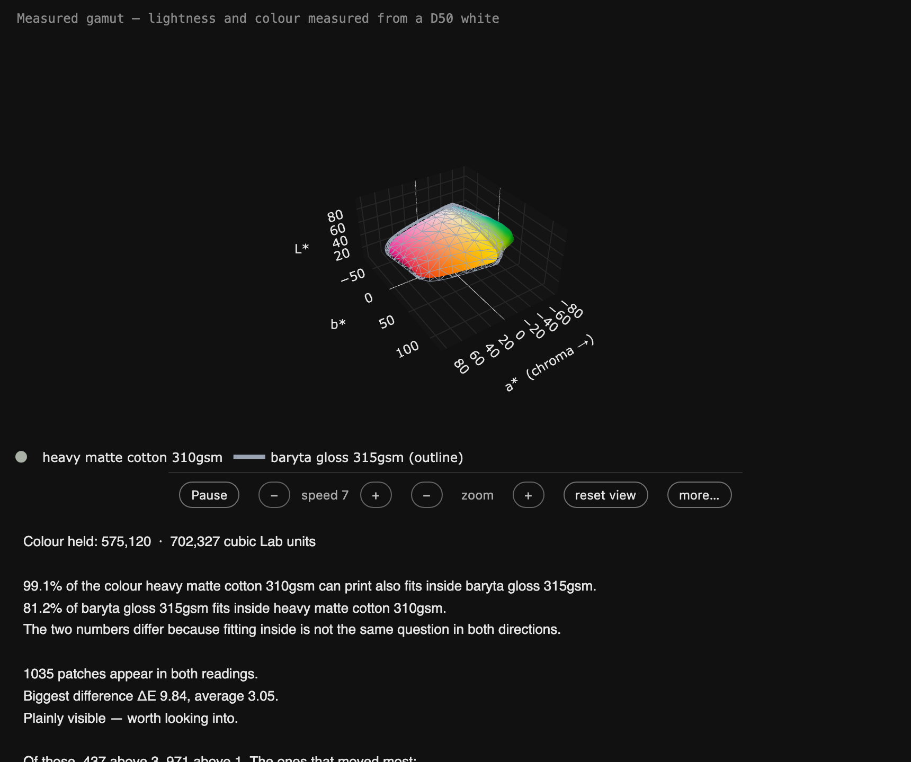
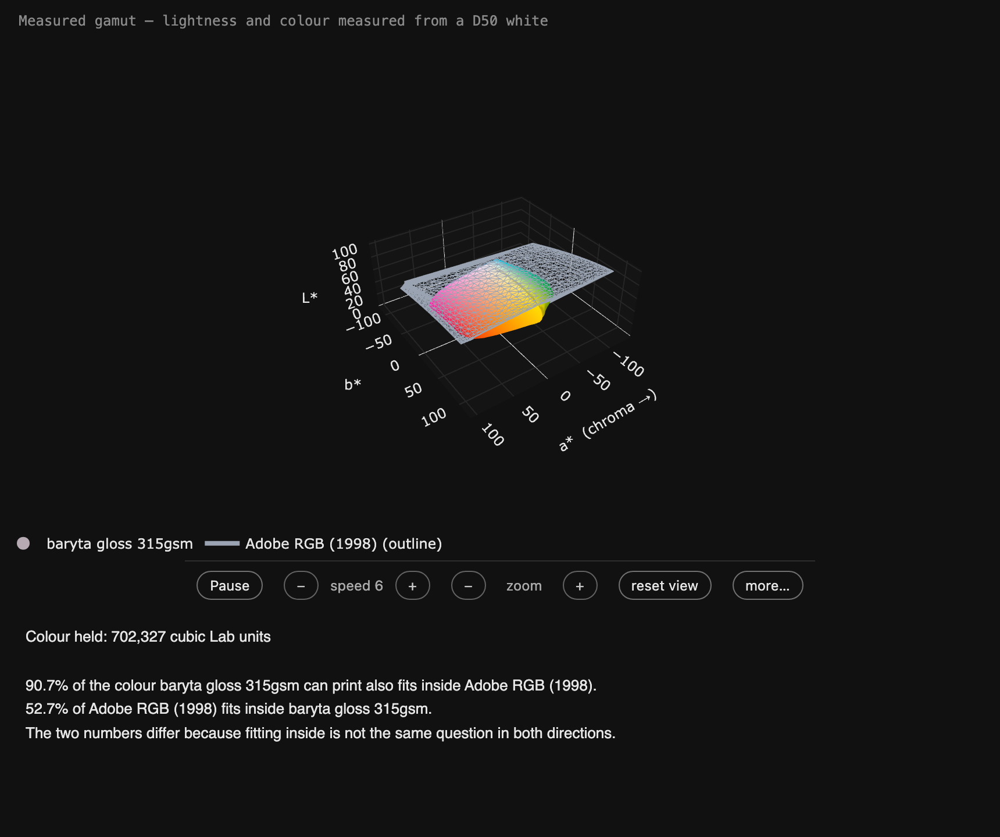
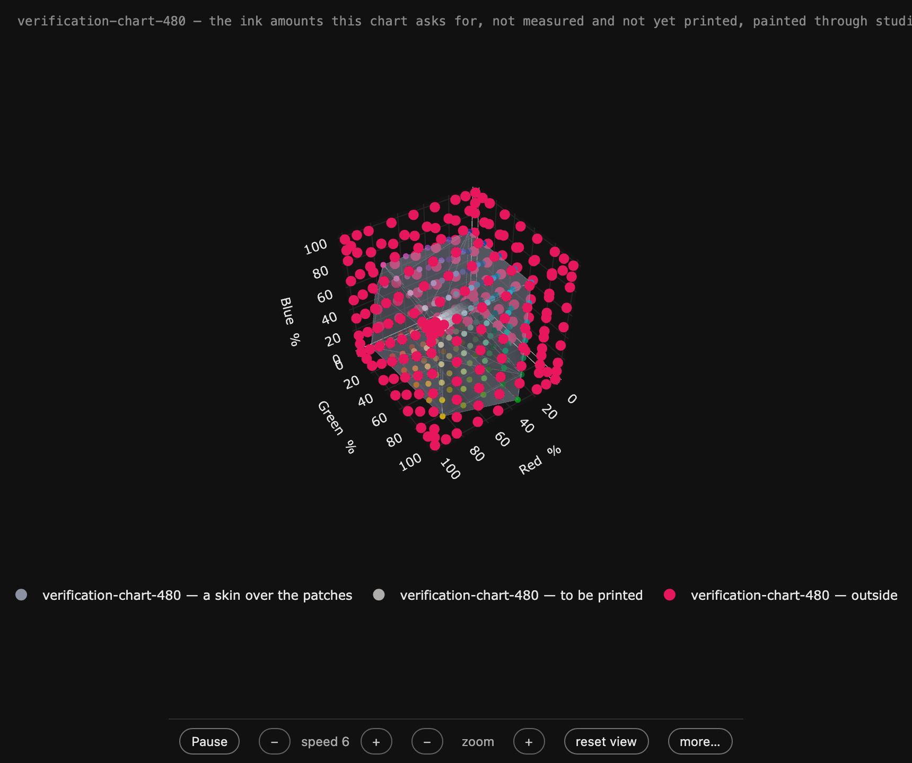
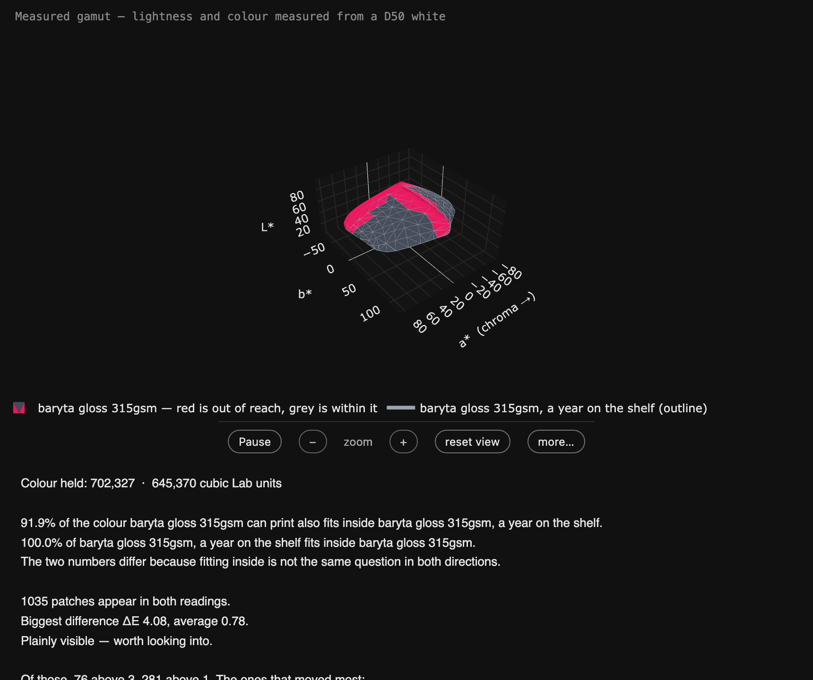
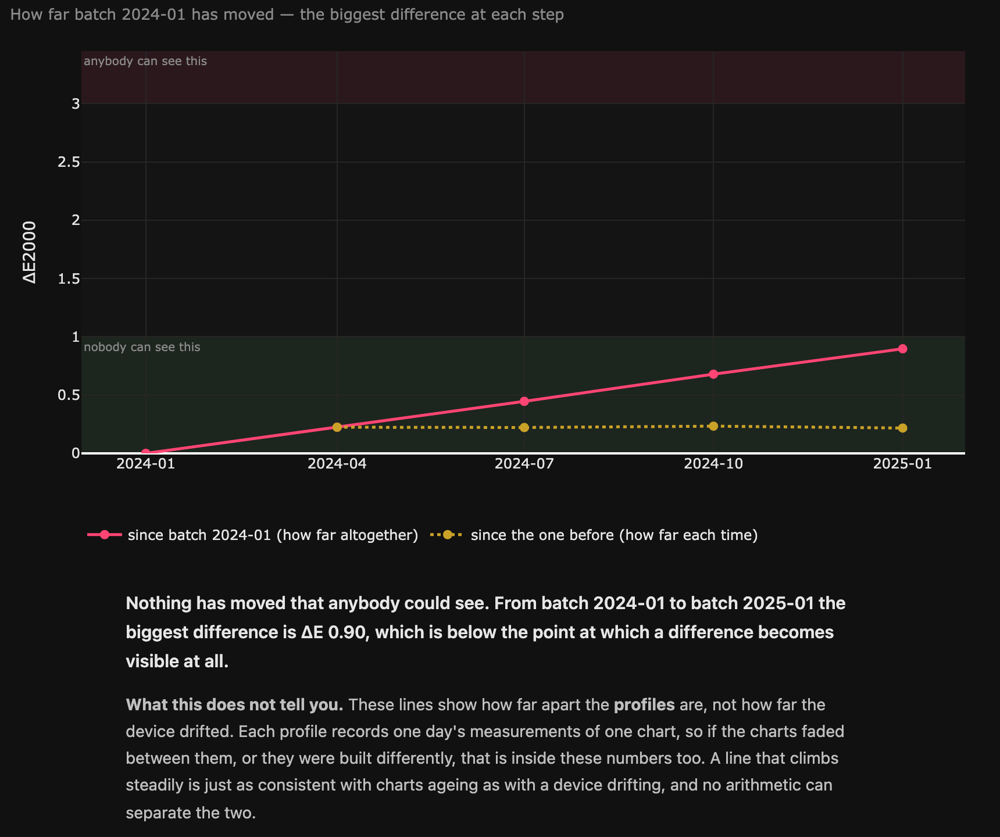
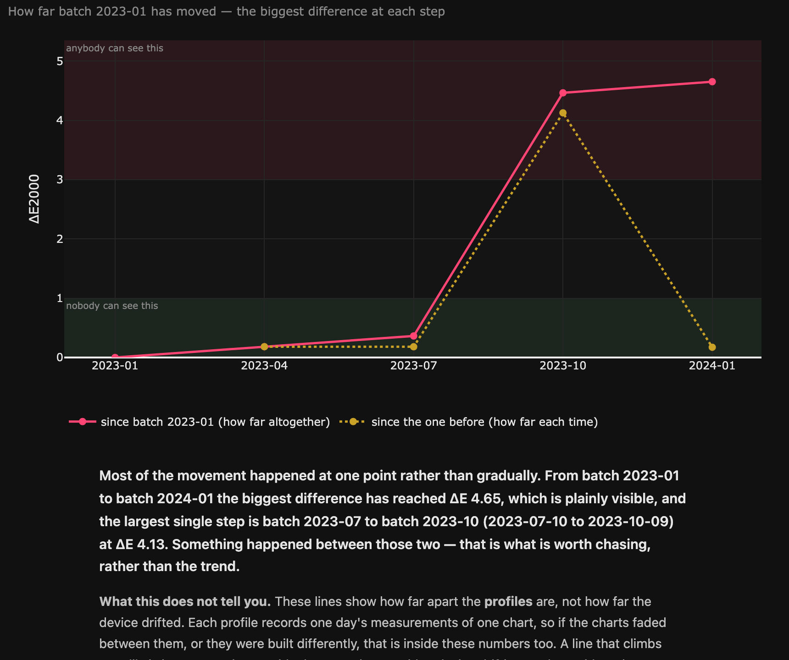
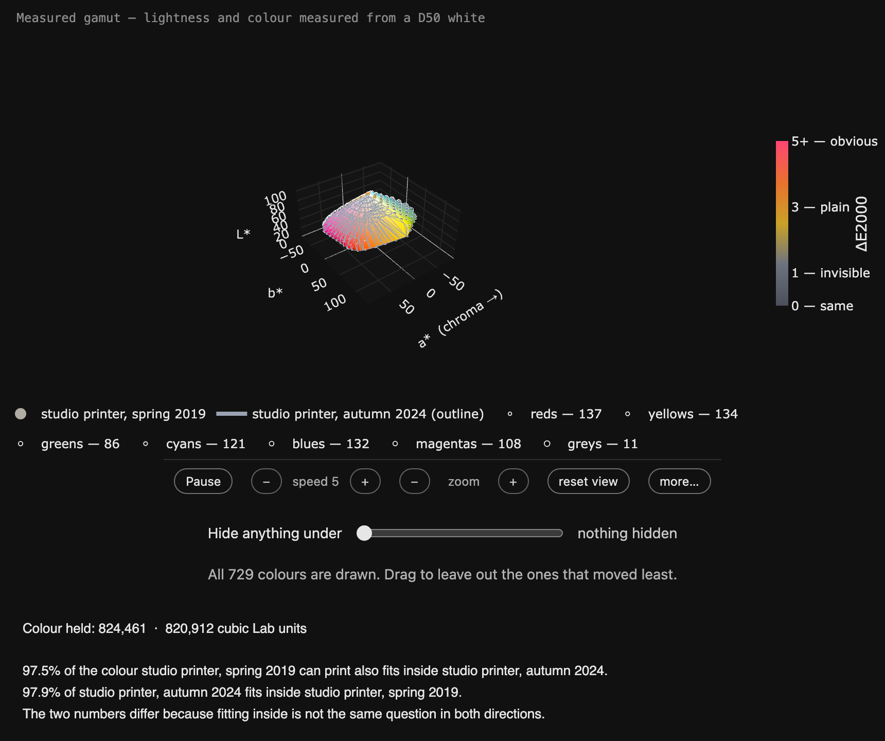
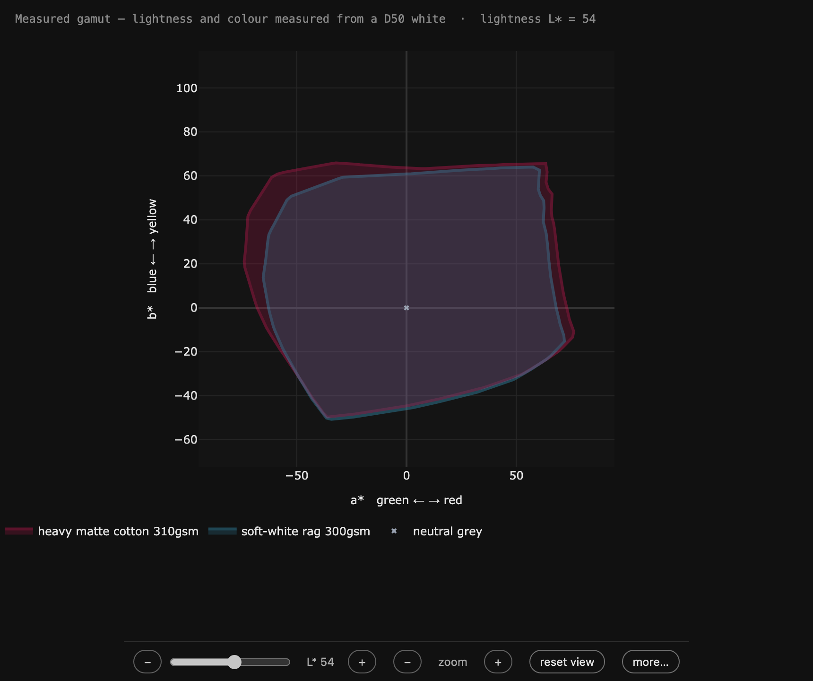
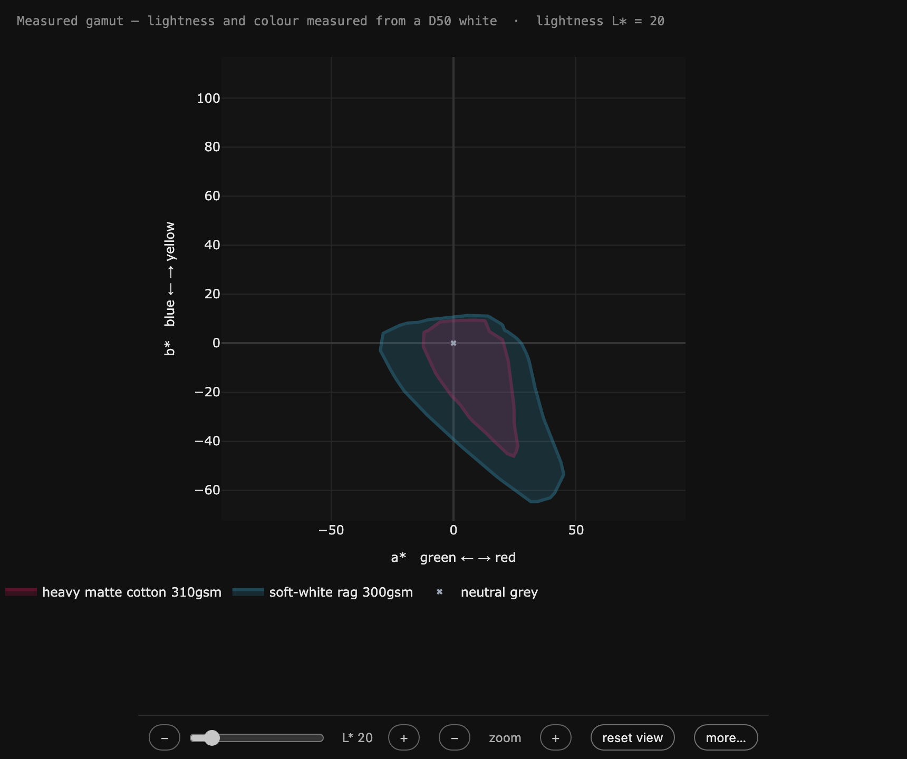

Eight questions about papers
A paper is usually sold on one number — a gamut volume, a
percentage of a standard space. Each picture below is a question that number
cannot answer, asked of real measurement files by
ChromIQ Gamut
Viewer and answered by the window itself. Every page was written by the
application's own Save this view as a web page… button, nothing edited
afterwards — so what you can turn, cut and interrogate here is exactly what
the person you send it to gets.†
The pages are not pictures. Open one: drag to turn, pinch or
scroll to zoom, click a name in the key to hide it, and use the strip under
the picture — it pauses the movement, changes its speed, and puts everything
back if you get lost. Open more… for the rest: fade one shape, drain
its colour, look from four fixed angles, dissolve away everything two shapes
agree on.
1“Fits inside” has two answers, and people quote one

The matte cotton solid, the baryta gloss as a cage around it.
Saved turning; the strip underneath is yours.
Two papers, compared the only honest way — both directions.
99.1% of the colour the heavy matte cotton can print also fits inside
the baryta gloss. Ask it the other way round and only 81.2% of the
gloss fits inside the cotton. Same two papers, same measurement, two
different answers — because containment is a direction, not a similarity
score. A single “these papers are 95% alike” figure is hiding whichever
direction it did not ask.[1]
Open it:
two papers, both ways
round.
2The same paper scores 90.7 on one ruler and 75.9 on
another

The gloss inside Adobe RGB (1998), drawn as a cage
in its own colours.
Coverage numbers come with a ruler attached, and the ruler is usually not
named. The same baryta gloss holds 90.7% of Adobe RGB (1998) — and
75.9% of sRGB. Neither number is wrong; they answer different
questions. Pictures edited for print mostly travel in Adobe RGB, pictures
from a phone in sRGB, so which ruler matters depends on whose files end up
on the paper. Quote either — but say which.[2]
Open them: against
Adobe RGB (1998) · against
sRGB.
3Print a 480-patch chart, and 247 patches don’t make it

The chart in the printer’s own ink amounts — every patch a
point in the RGB cube, the survivors under a skin.
A 480-patch test chart, placed through the gloss profile and asked what
happens on the matte cotton: 233 patches land within the cotton’s
reach, 247 ask for colour it does not have. That is the concrete
version of “smaller gamut” — not a percentage but a count of actual patches,
each one drawn where it lands. The same scene is saved twice, in the
printer’s own ink amounts
and in CIELAB — and the
counts are identical in both, because the space is how a thing is drawn,
never what it is judged by.[3]
4A year on the shelf, painted where it hurts

Red is out of reach a year later; grey is still within it.
The loss sits where a fading brightener puts it — in the blues.
The same gloss measured again after a year on the shelf. Its volume
figure barely blinks — but 8.1% of the colour it could print no
longer fits inside the new measurement (91.9% still does), and the
shape shows where: painted red across the blues and violets, which is
exactly the region an optical brightener takes with it as it fades. A reader
can fade away everything the two measurements agree on and be left looking
at nothing but the loss.[4]
Open it: a year
on the shelf.
5Five batches, and the graph that says “nothing to
see”

Five batches over a year, every step inside the band nobody
can see. The verdict is written on the page.
Batch-to-batch consistency is a claim that usually lives in a datasheet.
Here it is as a page: five batch profiles a few months apart, and across the
whole year the colours inside move ΔE 0.90 altogether — below the
point where a difference becomes visible at all. The page’s own verdict:
“Nothing has moved that anybody could see.” It also says, in the same
breath, what it does not claim — these are differences between
profiles, chart fade included.[5]
Open it:
five batches, nothing to
see.
6The batch where something happened, with the dates on
it

Quiet, quiet, a jump of ΔE 4.13, quiet. The page names the
two deliveries it happened between.
The other shape of run, and the more useful diagnosis. Three quiet
quarters, then one step of ΔE 4.13 — plainly visible — between the
deliveries of 2023-07-10 and 2023-10-09, and quiet again
after. A trend line would have averaged that into “gradual drift”; the page
says instead: something happened between those two dates, go and
look up what changed. That is a question with an answer in a production
log.[6]
Open it:
the batch where
something happened.
7Two shells the same size — and the colours inside moved
anyway

The 2019 and 2024 profiles of one printer, volumes 0.43%
apart, with the moved colours drawn between them.
The strongest case against judging by size. A studio printer profiled in
2019 and again in 2024: the two shells enclose volumes 0.43% apart —
identical by any figure anyone would quote. Inside them, the worst-moved
colour has gone ΔE 3.03, which is plainly visible on paper. Every
tool that compares gamut volumes calls this printer unchanged; the cloud
between the shells shows you exactly which reds and blues moved, family by
family, with a slider to hide everything below the ΔE you care
about.[7]
Open it:
two shells the same
size.
8Same volume, different paper: what one number hides

The cut at L* 54: the matte cotton (red) is the wider
paper in the mid-tones.

The same two papers at L* 20: down in the shadows the
rag is the one still standing.
The matte cotton and the soft-white rag enclose the same volume to within
a rounding error — 575,120 cubic Lab units each. “Equal gamut,” says the
number. Then cut both shapes at one lightness and slide: in the mid-tones
the cotton is clearly the wider paper; down at L* 20 the cotton is nearly
gone while the rag still holds real colour, because its blacks reach deeper.
One paper for saturated mid-tone work, one for shadow depth — and no single
number tells them apart. The slider on the page moves the cut, so the reader
finds the crossover themselves.[8]
Open them: the cut at
L* 54 · the cut at L* 20.
† What is real here, and what is invented. The papers are
imaginary and their names are made up — no page here describes any real
product. The measurements are derived from this project’s demo files by
scripts/make_showcase_measurements.py, which bends only what
each story needs and then proves its own story before writing a byte:
the containment asymmetry, the equal volumes, where the shelf-year loss
sits. Every number on this page was read off the running application while
the pages were saved — scripts/make_showcase_pages.py records
them into figures.json and fails the
build if this page quotes anything the window did not say. The arithmetic
answering the questions is the application’s own, and it treats invented
papers and real ones exactly alike. Measure a real paper and ask it the same
questions.